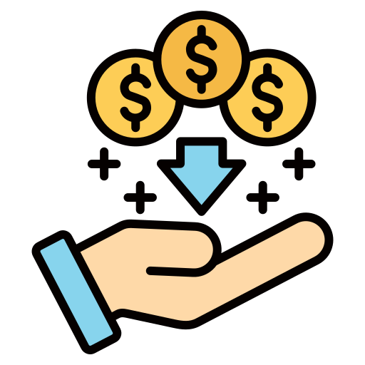

Как работи?
Инсталираш
Изтегляш и стартираш приложението.
Оставяш включено
Работи във фонов режим.
Печелиш
Получаваш пасивен доход.
Без инвестиция. Работи във фонов режим. Пасивен доход 24/7.
Започни сега
В последните години все повече хора търсят начини за печелене на пари онлайн. Пасивният доход от интернет се превръща в реална възможност, особено ако разполагате с компютър или телефон.
Един от начините е чрез използване на интернет връзката ви за маркетингови и изследователски цели. Това става чрез специализирани приложения, които работят във фонов режим.
Ако търсите начин да започнете без инвестиция, можете да разгледате тази възможност тук: Започнете от тук
Изтегляш и стартираш приложението.
Работи във фонов режим.
Получаваш пасивен доход.
✔ Без инвестиция ✔ Работи автоматично ✔ Лесно стартиране ✔ Подходящо за България
Печеленето на пари онлайн в България става все по-популярно. Много хора търсят пасивен доход, работа от вкъщи или допълнителен източник на средства. Интернет предоставя реални възможности за доход без инвестиция.
Пасивният доход е вид доход, който се генерира автоматично, без да е необходимо постоянно активно участие. След първоначална регистрация и настройка, процесът може да работи във фонов режим.
Да. Единственото необходимо е стабилна интернет връзка и устройство. Методът е подходящ за студенти, хора с основна работа или всеки, който търси допълнителен доход.
Доходът зависи от броя устройства и активността. При правилна стратегия е възможно постепенно увеличаване на месечния доход.
Ако искате да започнете веднага, можете да се регистрирате оттук: Регистрация